CREATE A ALB#
- Click Load balancers
- Click Create load balancer
- Click Create Application Load Balancer
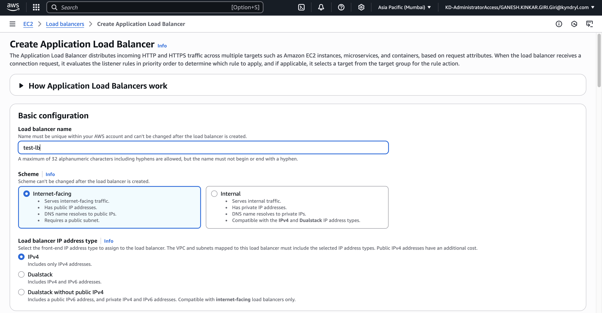
VPC: Select your VPC Availability Zones and subnets: Select Zones
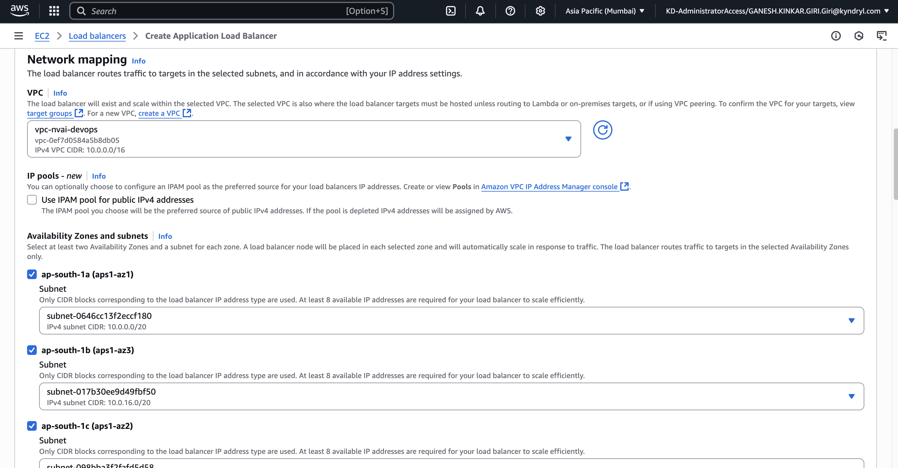
Security groups: create your security group HTTP and port 80 Listeners and routing: HTTP and port 80
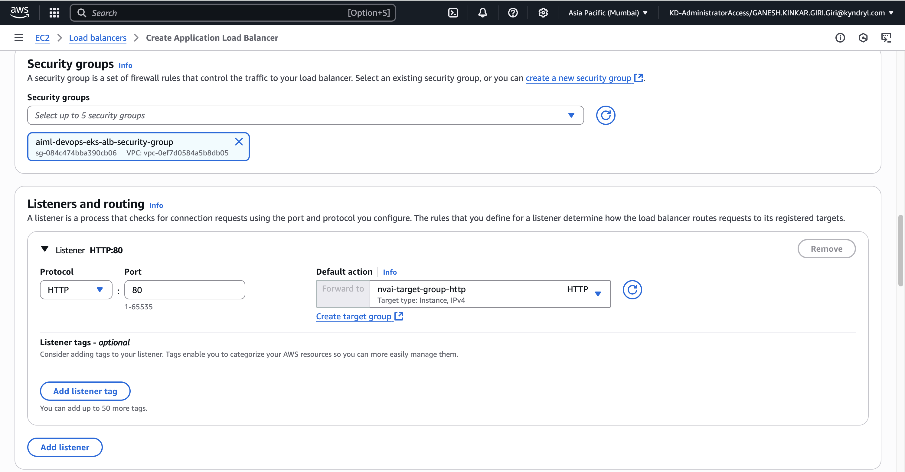
aiml-devops-eks-alb-security-group:#
Inbound rules: Type: HTTP Protocol: TCP Port Range:80
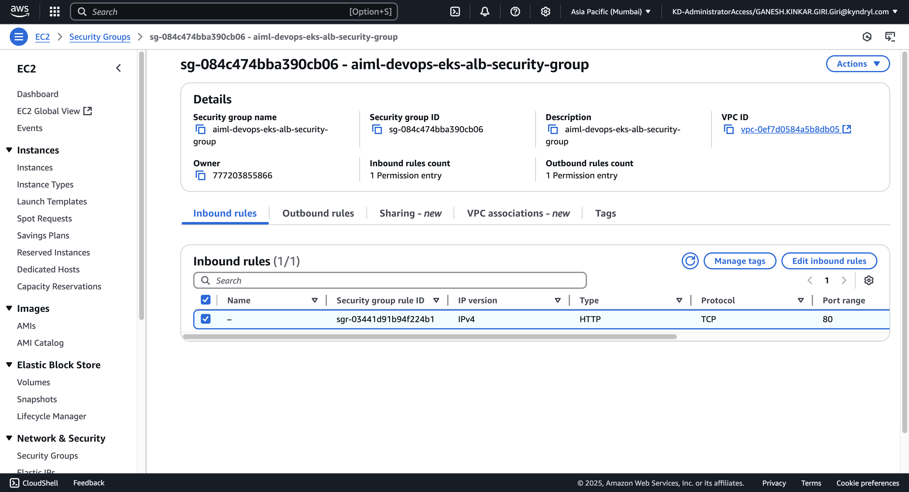
Outbound rules: Type: All traffic Protocol: All Port Range: All
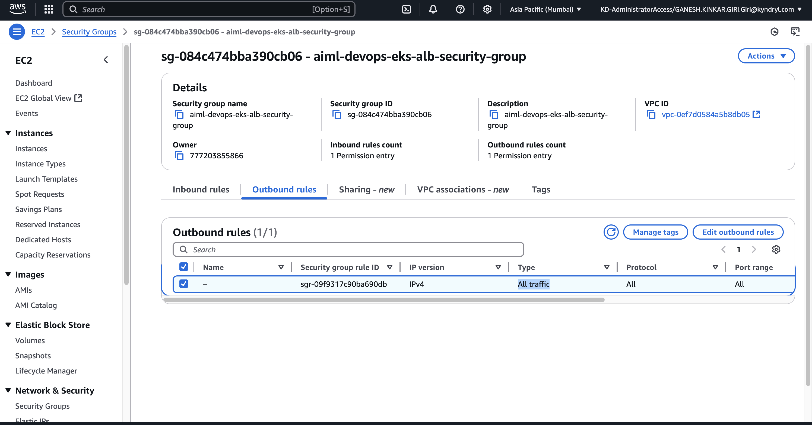
Target group:#
aiml-devops-eks-target-group
Protocol: HTTP Port:80
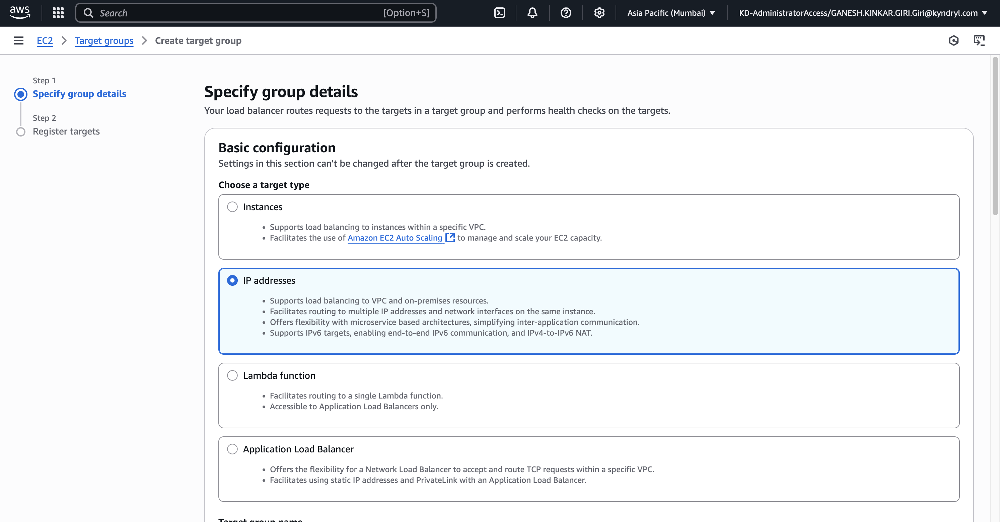
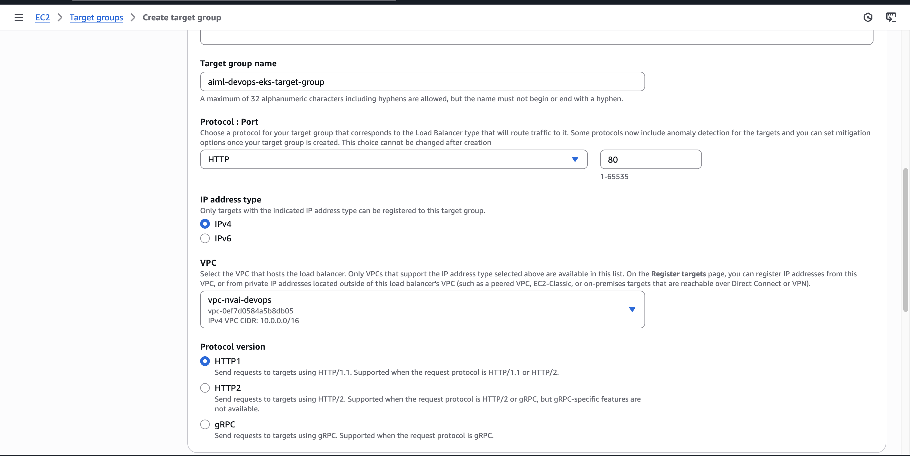
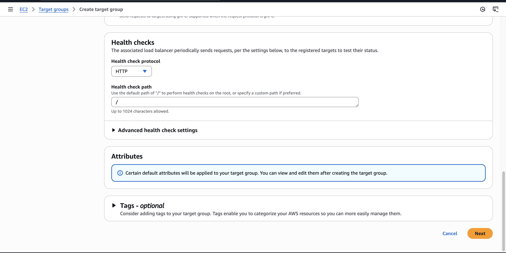
EC2#
- Instances
- i-084beb74e5cf7ca2b(Instance summary for i-084beb74e5cf7ca2b (devops-worker-node-dont-delete))
- Security: sg-039e9177e791695b9 (eks-cluster-sg-eks-nvai-devops-1264174662)
Inbound rules:
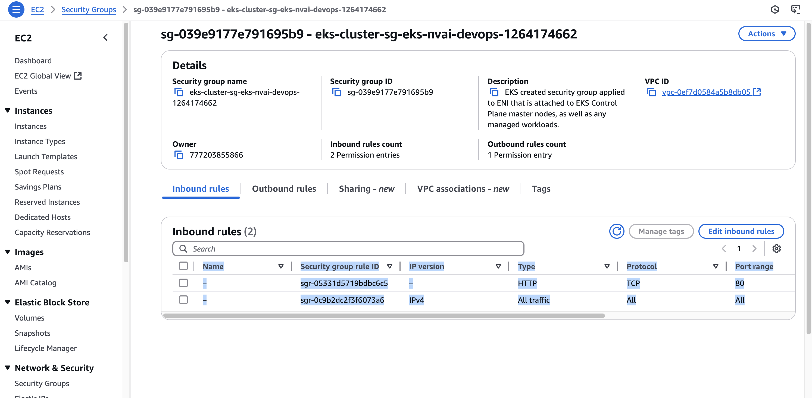
Outbound rules:
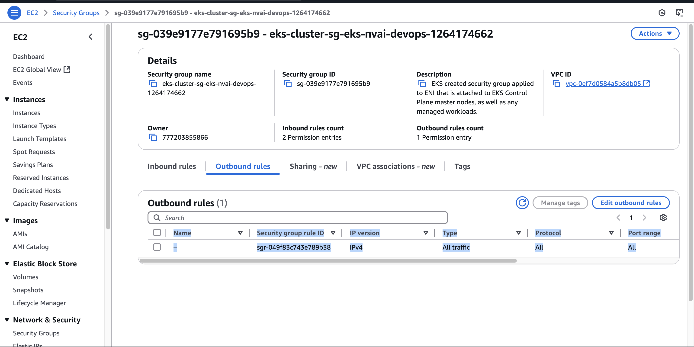
VPC#
vpc-0ef7d0584a5b8db05
Private Subnets#
subnet-007a981fc371a9ff2 subnet-08cb0d3c13a59859f subnet-00cadeb6d9b4e0b96
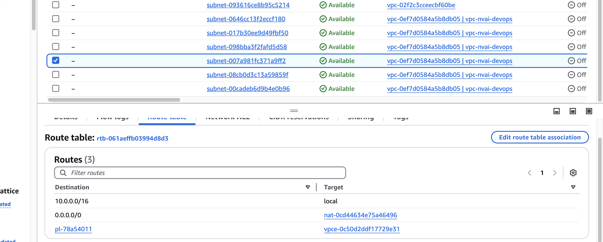
Private Subnet (EKS Worker Nodes live here):#
- Route Table:
- Destination: 0.0.0.0/0
- Target: nat-xxxxxxxxxxxxxxx ← ✅ NAT Gateway
Public Subnets:#
subnet-0646cc13f2eccf180 subnet-017b30ee9d49fbf50 subnet-098bba3f2fafd5d58
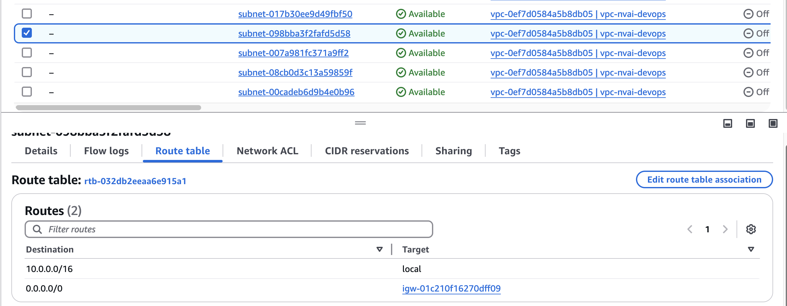
Public Subnet (NAT Gateway lives here):#
- Route Table:
- Destination: 0.0.0.0/0
- Target: igw-01c210f16270dff09 ← ✅ Internet Gateway
Creating OIDC provider#
- IAM
- Identity providers
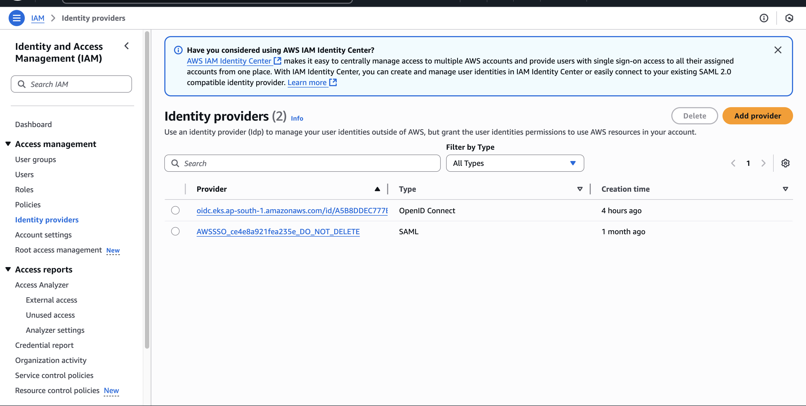
- Click Add provider
- Provider name: Run below command to get Provider URL
aws eks describe-cluster \ --name eks-nvai-devops \ --region ap-south-1 \ --profile KD-Admisssssssccess-7755555555866\ --query "cluster.identity.oidc.issuer" \ --output text
Example(Provider URL): https://oidc.eks.ap-south-1.amazonaws.com/id/Axxxxxxxxx02F9E527C9BA6
-
Audience : sts.amazonaws.com
-
Click Add provider
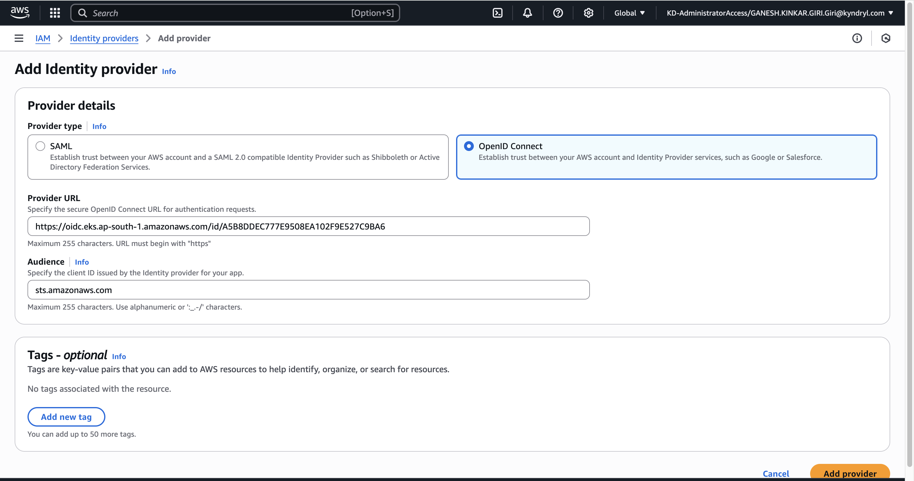
- Assign Role
- Create a new role
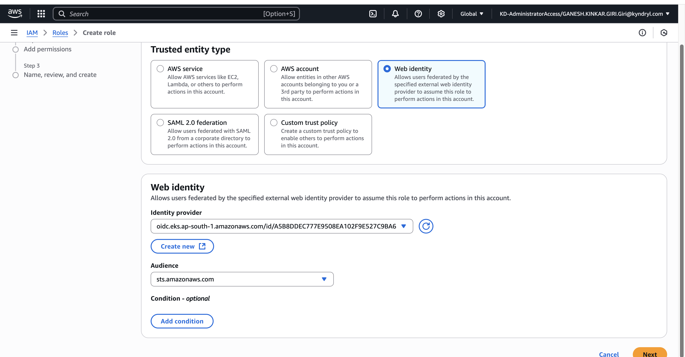
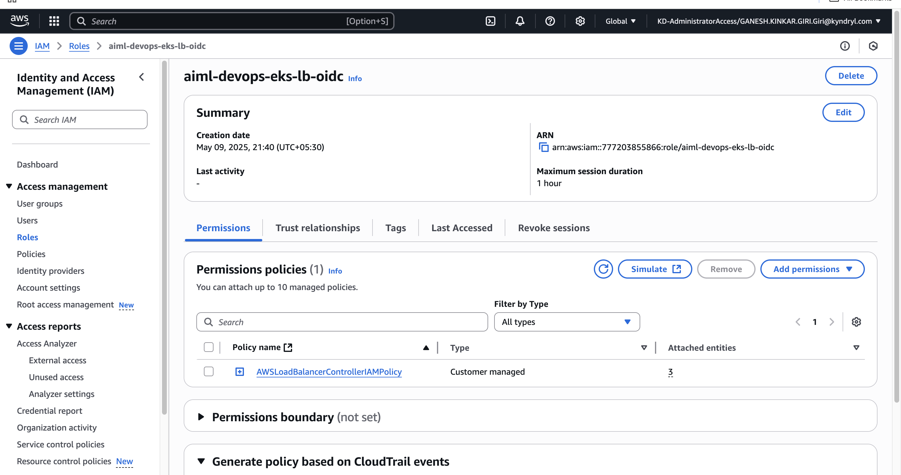
Install AWS Load Balancer Controller with Helm#
brew install eksctl
Step 1: Create IAM Role using eksctl#
curl -O https://raw.githubusercontent.com/kubernetes-sigs/aws-load-balancer-controller/v2.12.0/docs/install/iam_policy.json
Step 2: Create an IAM policy using the policy downloaded in the previous step.#
aws iam create-policy \
--policy-name AWSLoadBalancerControllerIAMPolicy \
--policy-document file://iam_policy.json\
--profile KD-AdmeeeeeeeeatorAccess-7755555855866
EX: Output:
{
"Policy": {
"PolicyName": "AWSLoadBalancerControllerIAMPolicy",
"PolicyId": "ANPA3J5HVWH5AYBPFK7Z4",
"Arn": "arn:aws:iam::7772044444866:policy/AWSLoadBalancerControllerIAMPolicy",
"Path": "/",
"DefaultVersionId": "v1",
"AttachmentCount": 0,
"PermissionsBoundaryUsageCount": 0,
"IsAttachable": true,
"CreateDate": "2025-05-09T12:38:43+00:00",
"UpdateDate": "2025-05-09T12:38:43+00:00"
}
}
Step 3: Create an IAM serviceaccount.#
Get AWS_ACCOUNT_ID
aws sts get-caller-identity --query Account --output text --profile KD-AdministratorAccess-77152225566
sts.amazonaws.com
**CREATE:**
eksctl create iamserviceaccount \
--cluster=eks-nvai-devops \
--namespace=kube-system \
--name=aws-load-balancer-controller \
--attach-policy-arn=arn:aws:iam:23419855866:policy/AWSLoadBalancerControllerIAMPolicy \
--override-existing-serviceaccounts \
--region ap-south-1 \
--profile KD-AdministratorAccess-74562203855866 \
--approve
DELETE:
eksctl delete iamserviceaccount \
--cluster=eks-nvai-devops\
--namespace=kube-system \
--name=aws-load-balancer-controller \
--region ap-south-1 \
--profile KD-AdministratorAccess-777203855866
Example Ouput:
2025-05-09 18:18:38 [ℹ] 1 iamserviceaccount (kube-system/aws-load-balancer-controller) was included (based on the include/exclude rules)
2025-05-09 18:18:38 [!] metadata of serviceaccounts that exist in Kubernetes will be updated, as --override-existing-serviceaccounts was set
2025-05-09 18:18:38 [ℹ] 1 task: {
2 sequential sub-tasks: {
create IAM role for serviceaccount "kube-system/aws-load-balancer-controller",
create serviceaccount "kube-system/aws-load-balancer-controller",
} }2025-05-09 18:18:38 [ℹ] building iamserviceaccount stack "eksctl-eks-nvai-devops-addon-iamserviceaccount-kube-system-aws-load-balancer-controller"
2025-05-09 18:18:38 [ℹ] deploying stack "eksctl-eks-nvai-devops-addon-iamserviceaccount-kube-system-aws-load-balancer-controller"
2025-05-09 18:18:38 [ℹ] waiting for CloudFormation stack "eksctl-eks-nvai-devops-addon-iamserviceaccount-kube-system-aws-load-balancer-controller"
2025-05-09 18:19:08 [ℹ] waiting for CloudFormation stack "eksctl-eks-nvai-devops-addon-iamserviceaccount-kube-system-aws-load-balancer-controller"
2025-05-09 18:19:09 [ℹ] created serviceaccount "kube-system/aws-load-balancer-controller"
Step 4: Install AWS Load Balancer Controller#
helm repo add eks https://aws.github.io/eks-charts
helm repo update eks
helm install aws-load-balancer-controller eks/aws-load-balancer-controller \
--set clusterName=eks-nvai-devops \
--set serviceAccount.create=false \
--set serviceAccount.name=aws-load-balancer-controller \
--namespace kube-system
Output:#
E0509 19:34:53.481411 60086 round_tripper.go:63] CancelRequest not implemented by *kube.RetryingRoundTripper
NAME: aws-load-balancer-controller
LAST DEPLOYED: Fri May 9 19:34:21 2025
NAMESPACE: kube-system
STATUS: deployed
REVISION: 1
TEST SUITE: None
NOTES:
AWS Load Balancer controller installed!
Step 5: Verify that the controller is installed#
kubectl get deployment -n kube-system aws-load-balancer-controller
NAME READY UP-TO-DATE AVAILABLE AGE
aws-load-balancer-controller 2/2 2 2 84s
Check#
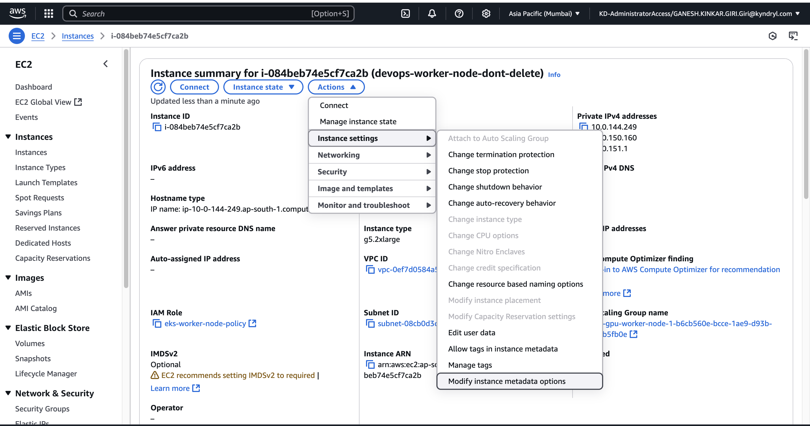
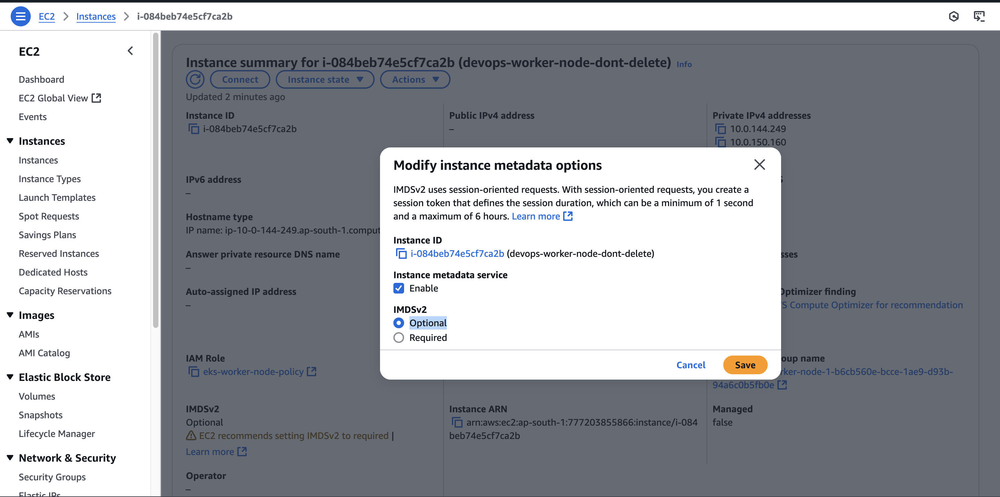
create nginx-ingress.yaml#
apiVersion: networking.k8s.io/v1
kind: Ingress
metadata:
name:
annotations:
alb.ingress.kubernetes.io/scheme: internet-facing
alb.ingress.kubernetes.io/target-type: ip
alb.ingress.kubernetes.io/listen-ports: '[{"HTTP": 80}]'
alb.ingress.kubernetes.io/healthcheck-path: /
spec:
ingressClassName: alb
rules:
- http:
paths:
- path: /
pathType: Prefix
backend:
service:
name: nginx-service
port:
number: 80
- Create namespace: aiml-app
nginx-deployment.yaml
apiVersion: apps/v1
kind: Deployment
metadata:
name: nginx-deployment
spec:
replicas: 2
selector:
matchLabels:
app: nginx
template:
metadata:
labels:
app: nginx
spec:
containers:
- name: nginx
image: nginx:latest
ports:
- containerPort: 80
kubectl create namespace aiml-app
kubectl apply -f nginx-service.yaml
kubectl apply -f xxxxxxx.yaml
nginx-service.yaml
cat: cat: No such file or directory
apiVersion: v1
kind: Service
metadata:
name: nginx-service
spec:
type: ClusterIP
selector:
app: nginx
ports:
- protocol: TCP
port: 80
targetPort: 80
kubectl get pod,svc,ingress -n aiml-app
NAME READY STATUS RESTARTS AGE
pod/nginx-deployment-96b9d695-98qd5 1/1 Running 0 106m
pod/nginx-deployment-96b9d695-gw46s 1/1 Running 0 106m
NAME TYPE CLUSTER-IP EXTERNAL-IP PORT(S) AGE
service/nginx-service ClusterIP 172.20.56.130 <none> 80/TCP 106m
NAME CLASS HOSTS ADDRESS PORTS AGE
ingress.networking.k8s.io/nginx-ingress alb * k8s-aimlapp-nxfggggggg2134-1385223656.ap-south-1.elb.amazonaws.com 80 106m
k8s-aimlapp-nginxing-d8a06b6d70-1385223656.ap-south-1.elb.amazonaws.com
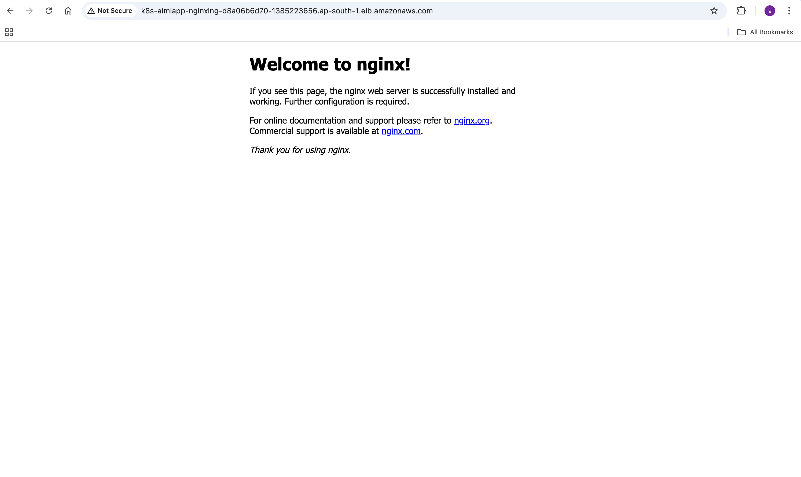